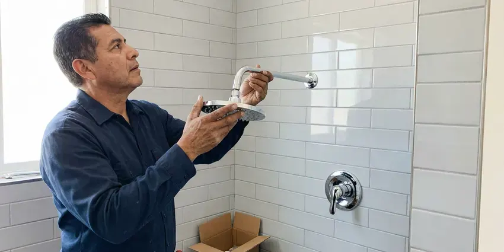

Bathroom Plumbing in Frederick, MD
Toilet that runs all night in your Frederick home? BVL Plumbing replaces the flapper or fill valve and looks over the bolts and supply line.
- Same-Day Bathroom Plumbing Service
- Warrantied Work
- Clean Job Sites
- Licensed Plumbers
Upgrade or Repair Your Bathroom Plumbing in Frederick, MD.
Call today and we will repair or replace your bathroom fixtures with quality parts and a clear price.
Bathroom Plumbers for Frederick, MD Homes
BVL Plumbing keeps the bathroom working in Frederick, MD homes, which matters more than people think until it stops. One bathroom down hurts. We work on every faucet, drain and fixture in the room, and we look for the small leak at the supply stop or the drain nut that is quietly rotting the vanity floor.
Some of what we do:
- Sink drain and P-trap repair
- Slow drain and clog clearing
- Faucet and shower cartridge repair

Additional Bathroom Plumbing Services in Frederick, MD
From toilets to showers, our bathroom plumbing team in Frederick, MD repairs, installs, and replaces every fixture with clean, code-compliant work.


Customers
Why Choose BVL Plumbing for Bathroom Plumbing in Frederick, MD?
Clear communication counts even on a flapper swap. We show you the worn part, what it costs and how long it will take.
- Tidy Work, We protect floors and tile and clean up before we leave.
- Brand Knowledge, We service and install Moen, Delta, Kohler, American Standard, TOTO and more.
- Licensed and Insured, Our plumbers are licensed, insured and kept current on code and new fixtures.
Citywide Coverage
Every neighborhood in Frederick and the surrounding area is on our route. Close in or out on the edges. The trucks carry the same parts no matter where they are headed, so a bathroom repair on the far side of town gets the same one-visit fix as one around the corner.
Experienced Team
The BVL Plumbing crew is made up of licensed, knowledgeable plumbers who are easy to talk to. They explain things plainly. Each plumber can find the cause on visit one, from a toilet that ghost-flushes to a shower that drifts cold, and fix it right.
Safety-First Approach
We use proper flange repair, wax or waxless seals and pressure-rated supply lines. Leak tests are standard. Each fixture is run and checked at every connection before we leave, since a slow drip can rot a vanity floor in months.
Trusted Certified Frederick Plumbing Services Professionals
At BVL Plumbing, we take pride in licensed, certified plumbing services throughout Frederick, MD. Those papers on the wall mean something. Every repair, install and maintenance visit follows strict safety and quality rules, and the plumbers doing the work carry recognized industry credentials.
Call Us Now PHCC Plumbing Contractor Recognition
PHCC Plumbing Contractor Recognition Better Business Bureau (BBB) Accreditation
Better Business Bureau (BBB) Accreditation Angi Certified Pro
Angi Certified Pro ISO 9001 Quality Management Certification
ISO 9001 Quality Management CertificationToilet, Faucet and Shower Repair in Frederick, MD
Bathtub Faucet Replacement in Frederick, MD
Old tub faucets drip, stick or just look tired. We replace them. Single-handle and wall-mounted styles go in with a tight seal at the wall, and a worn valve behind them gets replaced too. Local water in Frederick, MD is hard on tub valves, so we recommend durable models.

Preventative Maintenance in Frederick, MD
Most bathroom plumbing problems give warning signs first. We look for them. A maintenance visit includes checking seals, testing house water pressure and clearing minor drain buildup before it becomes a clog, which extends fixture life and catches leaks while they're still small. Frederick, MD homes benefit most with hard water.
Sink Repair and Installation in Frederick, MD
Leaking drains, broken pop-ups and failed supply lines are the common sink repairs. New vanities too. Undermount, vessel and pedestal sinks go in with matching faucets and drains, and corroded traps get replaced to stop leaks and smells. Clean, secure connections safeguard your cabinetry.
Water Pressure and Flow Issues in Frederick
Weak pressure in one shower usually means scale in the head or cartridge. Clean the head first. A water test is a smart first step around Frederick before choosing a softener, because hardness and minerals vary from one supply to the next. If every fixture is low, the pressure regulator, the main line or a partly closed valve is more likely, and we test the house pressure with a gauge to find which one it is.
Shower Repair and Valve Replacement in Frederick, MD
Showers that drip, swing hot and cold or won't shut off usually need a new cartridge. Old valves may need replacing. Cartridges and full valves get replaced, and when the wall must open, we try to work from the back side through a closet or bedroom. We also replace showerheads, diverters and tub spouts.
Toilet Installation and Replacement in Frederick, MD
Cracked, wasteful or worn-out toilets are usually better replaced. Removal is included. We install WaterSense toilets, comfort-height models and wall-hung units from TOTO, Kohler and American Standard, and every install includes a new wax ring, closet bolts and supply line.
Shower and Bathtub Plumbing in Frederick
A tub that drains slowly is usually hair caught in the stopper. Showers clog the same way. Drains get cleared, diverters and heads fixed and tub faucets replaced, with every connection behind the wall secured before tile goes back. Frederick homes are left leak-free.

Urinal Installation and Commercial Bathroom Plumbing in Frederick
Commercial restrooms take a beating every day. Flush valves wear out fast. BVL Plumbing installs urinals with the right supply and drain connections under commercial plumbing code, plus repairs flushometers, sensors and drains in high-traffic restrooms to keep downtime short. Frederick businesses can book after hours.
Bathroom Plumbing Near You in Frederick, MD
Local plumbers know local plumbing. The water here matters. Hard water, old galvanized lines and the common local brands shape our repairs, so we recommend fixes that last.
Type 'bathroom plumbing near me' in Frederick, MD and BVL Plumbing comes up close by. Our plumbers are nearby. Most visits happen within a day, and leaks, clogs and running toilets can often be handled the same day.
BVL Plumbing at a Glance
- Licensed and insured plumbers serving Frederick, MD
- Same-day appointments and 24/7 emergency response
- Clear written estimates, no hidden fees
- 4.8-star rated by 542+ Maryland customers
Frederick Map
Frederick Information
- Population
- 85,793
- Area codes
- Local
- Service area
- Frederick and towns within a 40 mile drive
- Nearby
- Germantown, Hagerstown, Gaithersburg, Rockville
A water test is a smart first step around Frederick before choosing a softener, because hardness and minerals vary from one supply to the next. That water is hard on supply lines, stops and cartridges, which is why so many fixture calls come in from Frederick, MD homes.
Expert Services
Reach out to BVL Plumbing for reliable plumbing work done by licensed pros in Frederick, MD.
Our Specialized Plumbing Services in Frederick, MD
At BVL Plumbing, you get every kind of plumbing service from one company across Frederick, MD. From leak detection to full system installs, our team works fast and charges fair prices on homes and commercial properties alike. Explore our core services below:


How Bathroom Plumbing Service Works in Frederick, MD
We inspect, price, repair and leak-test, in that order, on every bathroom job.
Call or Book Online
Call (443) 719-1650 or use the online form. Describe the problem, and we'll set a time for a visit.
Look and Quote
A plumber arrives at your Frederick home, checks the fixture and gives you a written price before starting.
Fix and Test
Once you approve, we make the repair or install with quality parts and check every connection for leaks.
Frequently Asked Questions About Bathroom Plumbing in Frederick
A faucet repair usually runs $150 to $300. Toilets cost more. Replacing a toilet, fixture included, often lands at $400 to $800 based on the model and the flange condition. The estimate comes after diagnosis.
Once or twice a year is enough for most Frederick homes, especially with long hair in the house. A water test is a smart first step around Frederick before choosing a softener, because hardness and minerals vary from one supply to the next. Scale can narrow drain pipes over time.
A worn flapper, a faulty fill valve or a chain that is too short are the most common causes. Chlorine in treated water breaks down rubber flappers over time.
Scale in aerators or showerheads is the most common cause. Regulators fail too. A bad regulator, a supply leak or a water heater issue can also do it, and we test at the fixture and the main to narrow it down.
Strainers in sinks and showers catch most hair. Keep wipes out of toilets. Running hot water through drains now and then and keeping grease and harsh chemicals out of them helps too, and a yearly maintenance visit catches buildup before it becomes a full clog.
Often yes, with a wrench and some thread tape. Wall leaks need a plumber. If you have low pressure, water coming from behind the trim or plans for a multi-function system, it is best to have a plumber handle the valve and the connections so nothing leaks inside the wall.
Many homeowners can replace a simple faucet. Old valves complicate it. Old stops, a leaky drain or a wall-mount faucet are good reasons to call a plumber and avoid a hidden leak.
Most drips come from a worn cartridge or seal. Scale speeds it up. Mineral scale damages cartridges early, and a new cartridge usually fixes it without replacing the faucet.
Hear From Customers Who Hired Our Plumbing Experts

Laura S.
Our 40 gallon tank started leaking from the bottom after thirteen years. The tech hauled the old one out, set a new unit with a fresh expansion tank, and had hot water running in about four hours. He took the old tank with him too.
Water Heater Replacement · Frederick, MD
Kevin O.
Before buying our house I paid for a sewer camera inspection. BVL Plumbing found a belly in the line that held standing water about forty feet from the cleanout. We used the video to get the sellers to fix it before closing.
Sewer Camera Inspection · Aspen Hill, MD
Patricia H.
We had a slab leak that two other companies could not find. BVL Plumbing located it in under an hour with a listening device. They rerouted the line through the attic instead of breaking up the floor, so we kept our kitchen tile.
Slab Leak Repair · Hagerstown, MD
Emily R.
The shutoff valve under our kitchen sink snapped off in my hand on a Sunday morning. BVL Plumbing had someone out by early afternoon. He replaced both angle stops with quarter turn valves and showed me where our main shutoff was, which I honestly did not know.
Plumbing Repair · Rockville, MDRobert G.
The camera showed a full break in our clay sewer line near the street. BVL Plumbing replaced it with a trenchless pipe burst, so the only digging was two small pits in the yard. They let us watch the footage before and after.
Sewer Line Replacement · Frederick, MDDiane F.
My kitchen faucet had dripped for months and I finally got tired of hearing it at night. BVL Plumbing came out the next morning, replaced the cartridge and the O rings, and tightened a loose base that was letting water under the sink.
Faucet Repair · Potomac, MD